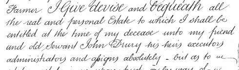

Our Drury family is well rooted in Lincolnshire and can be traced back to Robert Drewry, born about 1685. Unfortunately we do not know where Robert originated but he married Catherine Hanson of Bottesford, Leicestershire, in Bottesford in 1707. Robert and Catherine's son, Robert, was born nearly two years later in Brant Broughton, Lincolnshire. Sadly Robert lost his father whilst young and his mother died when he was only twelve years old. In her will of 1721 Catherine Druery entrusts her only son Robert to her "trusty and wellbeloved friend Mr John Marshall". Robert Drewry was later described as a Gentleman and was to become Sheriff of Lincoln and its Mayor in 1761. He married Mary Darcy in Brant Broughton in 1731 and they had eight children that we are aware of, before Robert died in Brant Broughton in 1791. Their youngest son,William Drury, was born in 1744 in Brant Broughton, Lincolnshire. He was a shoemaker, who had six children by his second wife Anne, before he died in Eagle, Lincolnshire in 1801.
William's second son became a farm servant for William Blow, farmer at Housham Grange in the hamlet of Housham, close to South Hykeham, Lincolnshire. Its unclear when John Drury joined Blow, who had taken over the tenancy of Housham Grange in about 1808. The farm was in its heyday under Blow who farmed 100 acres by 1851. The cottage was actually home to nine people, including Blow and the Drury family. Three of the occupants were female house servants aged 15.

William Blow was born in Lincoln in 1769, the only son of John and Susanna Blow. His wife died childless in 1829 and so was without any obvious male heir. In his will dated June 1854 he made specific provision for "his friend and old servant John Drury" to succeed him. John had been described as a Wellingore man at the time of his marriage to Mary Tindal in 1827. By the time he took over Housham Grange he already possessed a considerable amount of copyhold land at Eagle.

The will of William Blow in which he bequeaths Housham Grange to John Drury
John himself died in 1857 passing on the farm to his second son John. His first son William had already married Ann Wood in 1854 and was farming in his own right at Eagle. Ann Wood was literally the 'girl next door' and lived on the neighbouring Housham Wood Farm .
William and Ann had a family of nine, there youngest son was Tom Drury . The eldest sons carried on the farming tradition but Tom turned to the trade of printing and after completing his apprenticeship he settled in Loughborough and married Lucy Warren. Tom and Lucy had two children Eva and William Drury .
Current Research : Searching for the origin of the Drury family in Lincolnshire. Also tracing the descendants of Tom Drury's (b 1869) siblings.